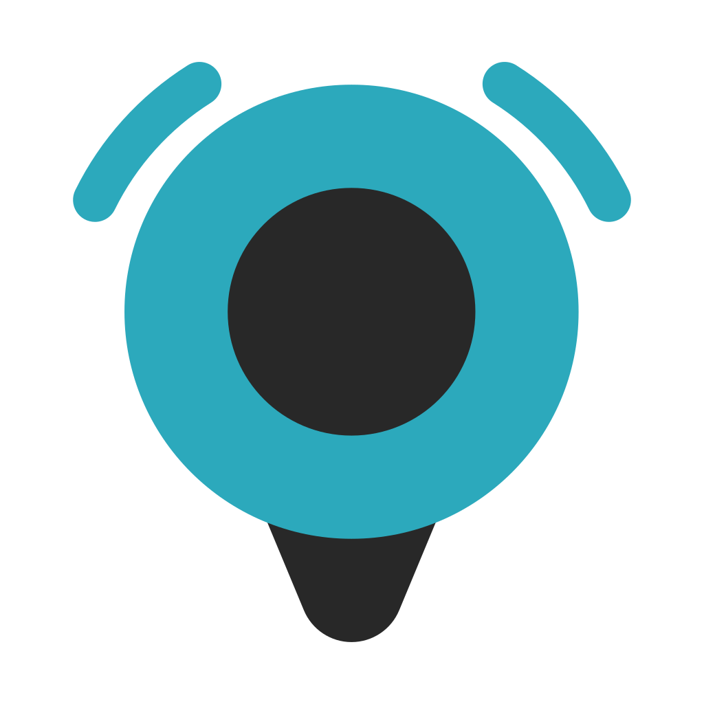
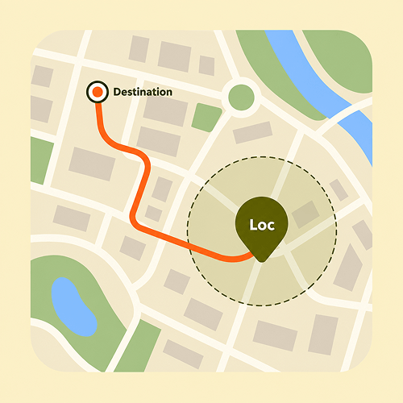
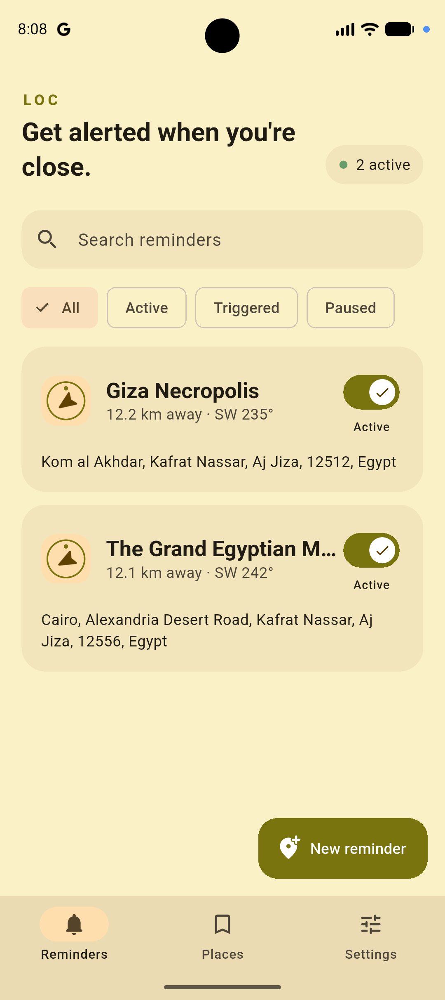
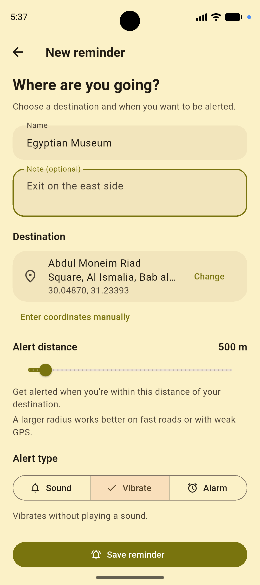
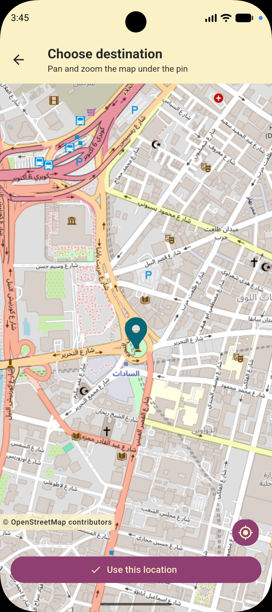

Flexible destinations
Drop a pin, enter coordinates, select a location in another map app, or reuse a saved place.

LocLocation reminder for Android
Set your destination. Loc pings you when you're nearby.

Drop a pin, enter coordinates, select a location in another map app, or reuse a saved place.
Use a notification, vibration, or repeating alarm for each reminder.
No analytics or ads. Your data stays on your device.
Loc can detect when you pass through your alert area, even between GPS updates.



Loc is free and open-source software licensed under the GNU GPL v3.0.